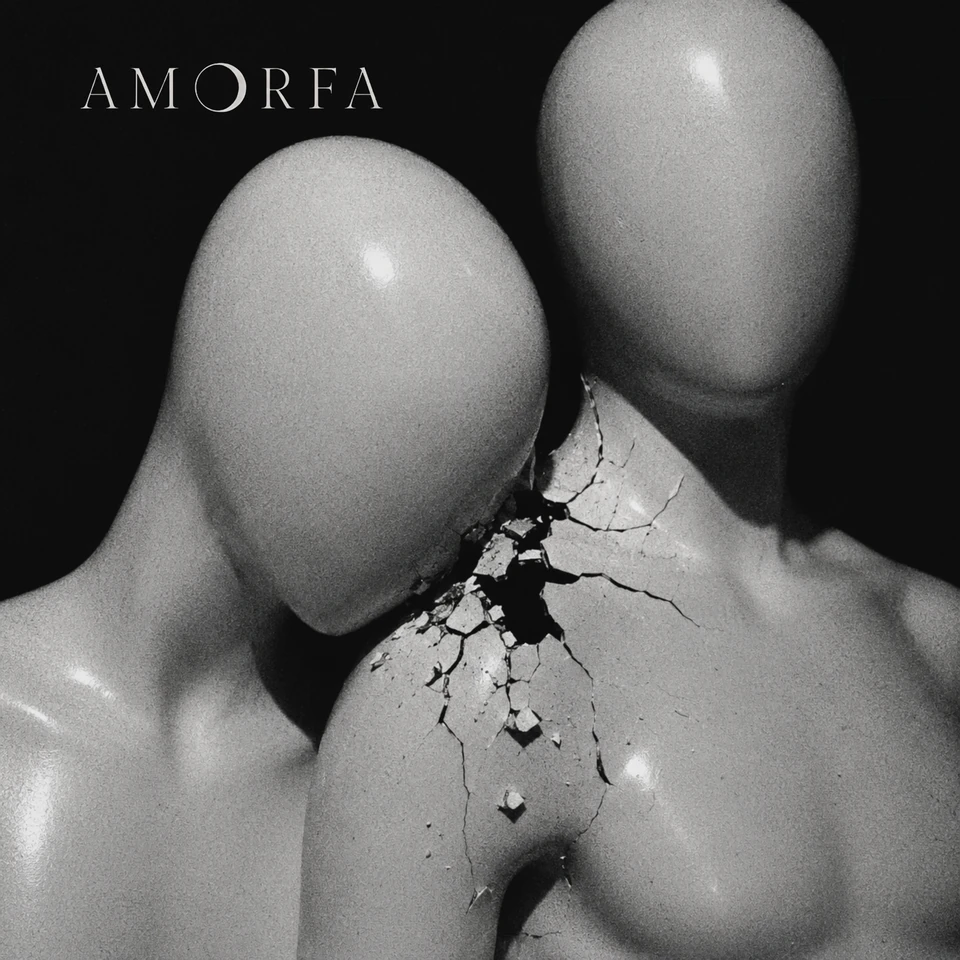

Álbum I da Antologia AMORFA
Tudo Que Eu Uso Me Usa de Volta
A imagem salva e devora.
O primeiro álbum da Antologia AMORFA atravessa tela, app, vitrine, corpo-produto, pose e desejo como consumo. Aqui, tudo que ajuda a funcionar também aprende a usar.
tracklist
Faixas
- 01Versão Consumida
- 02Fusão Nuclear
- 03Luz Azul
- 04Modo Avião
- 05Só o Que Vende / Livre Pra Quem
- 06Kouros de Silício
- 07Corpo-Entulho
- 08Vênus Aflita
- 09Você Era Banal
- 10Placebo
- 11Glamour Febril
- 12Cento e Oitenta
- 13Terminal